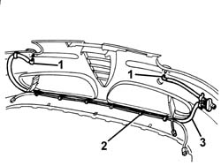
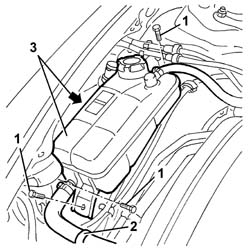
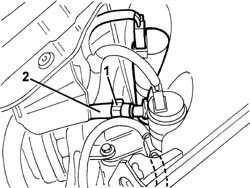

5050D13 headlamp washer system types and fittings - r r
- Path
- Procedures > 50 AUXILIARY UNITS > 5050 SCREEN WASHERS AND HEADLAMP WASH/WIPE > 5050D headlamp wash/wipe > 5050D13 headlamp washer system types and fittings - r r
- Kind
- repair procedure (removal / refitting; the operation number is the code)
- Applies to
- all engines; all production periods
- Interactive page
- https://sloeber94.github.io/elrnDB-a147/en/#/3025475
Applies to: engines: 1.9 JTD 16V; all production periods
 Removing
Removing
 Refitting
RefittingApplies to: engines: 1.9 JTD 16V; all production periods
7055B54 under-engine guard - r r
7055B64 Engine compartment DUST shield in front wheel arch (one), left or right - R.R. (right and left)
7055B42 Additional FRONT WHEEL ARCH (one), left or right - R.R. (right and left)
1. Disconnect the pipe quick-release fittings from the headlamp washer jets.
2. Open the bands.
3. Remove the pipe

Applies to: engines: 1.9 JTD 16V; all production periods
1. Undo the bolts fixing the coolant reservoir.
2. Disconnect the retaining band.
3. Move the coolant reservoir.

Applies to: engines: 1.9 JTD 16V; all production periods
1. Loosen the band on the coolant supply pipe to the headlamp washer.
2. Disconnect and recover the pipe.

Applies to: all engines; all production periods
Refitting
RemovingCheck that the pipes are not damaged.
Connect the pipe to the headlamp washer pump and secure it with the retaining band.
Position the coolant reservoir and secure it using the bolts.
Connect the retaining band.
Fit the pipe on the front bumper and secure it with the retaining bands.
Connect the pipe quick-release fittings to the headlamp washer jets.
7055B42 Additional FRONT WHEEL ARCH (one), left or right - R.R. (right and left)
7055B64 Engine compartment DUST shield in front wheel arch (one), left or right - R.R. (right and left)
7055B54 under-engine guard - r r
Check that the headlamp washer system is working properly.
Applies to: engines: 1.9 JTD 16V; all production periods
Topics linked from this page (6)
- 7025A12 Engine front sound insulation COVER - R.R.
- 7025A14 Bonnet LID - R.R.
- 7055B42 Additional FRONT WHEEL ARCH (one), left or right - R.R.
- 7055B54 under-engine guard - r r
- 7055B64 Engine compartment DUST shield in front wheel arch (one), left or right - R.R.
- 7210E10 R.R. CENTRE PILLAR